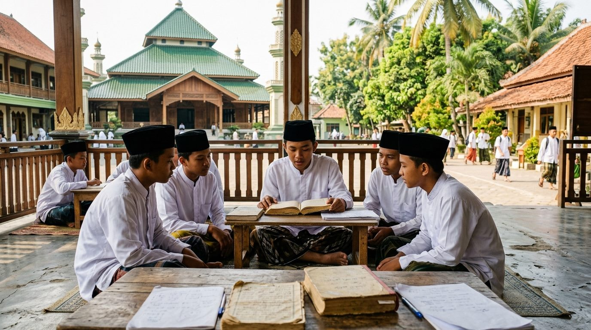
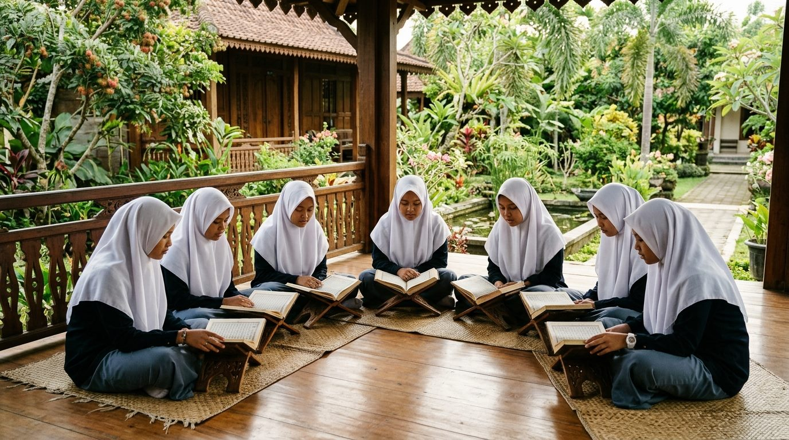
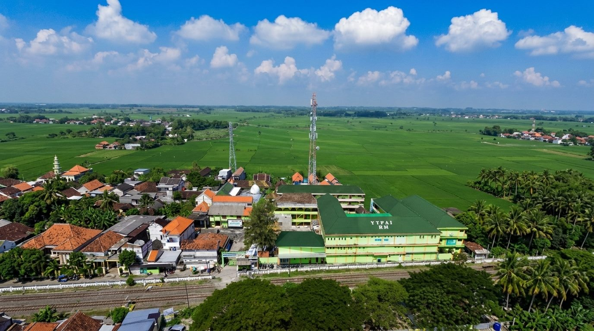
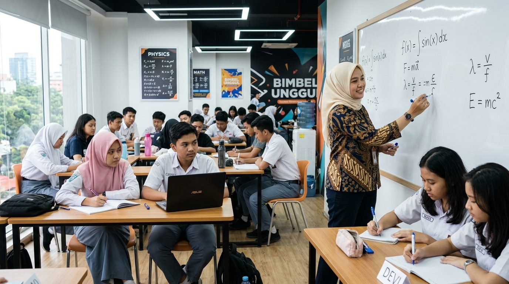
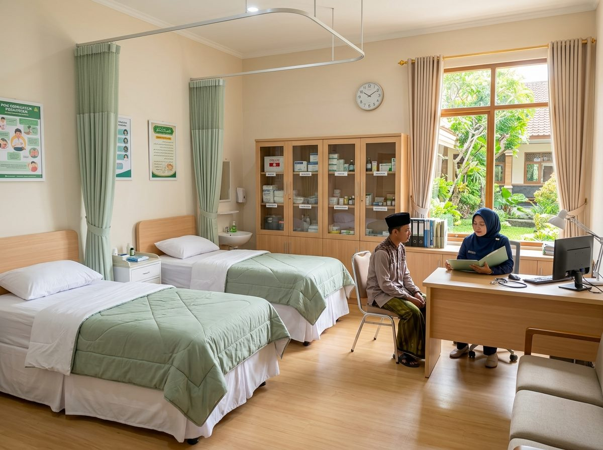

Pendidikan Terbaik untuk Generasi Unggul dan Berkarakter
Yayasan Taman Pendidikan Agama Islam Raudlatul Muta'allimin Lamongan mengintegrasikan kurikulum nasional, keunggulan sains terapan, serta keluhuran tradisi kepesantrenan salaf dalam satu ekosistem pendidikan modern.
Beraqidah Shohihah
Merujuk pada kemurnian tauhid & keyakinan yang lurus sesuai ajaran Al-Qur'an dan Sunnah Ahlussunnah Wal Jama'ah.
Beramal Sholeh
Mengaplikasikan ilmu syariat dalam rutinitas keseharian, pembiasaan sholat berjamaah, dan ibadah sunnah.
Berilmu Manfaat
Penguasaan kitab kuning salafiyah dipadu kurikulum sains modern yang berdaya guna bagi peradaban umat.
Berakhlaq Karimah
Membentuk kepribadian santri yang berbudi pekerti luhur, beradab mulia, tawadhu', dan berjiwa khidmah.


“Menjadi lembaga dakwah dan pendidikan yang terkemuka dalam membentuk Generasi mukmin yang terampil, berbudi tinggi, dan berpengetahuan luas untuk mewujudkan kesejahteraan umat dan bangsa.”
Kunjungan Terbuka Pesantren & Asrama
Kami menyambut hangat kunjungan silaturahmi calon wali santri untuk melihat langsung lingkungan belajar, kenyamanan asrama, dan atmosfer kepesantrenan.
Yayasan Taman Pendidikan Agama Islam Raudlatul Muta'allimin Lamongan
Didirikan pada tahun 1984 di Dusun Tegalrejo, Desa Datinawong, Kec. Babat, Lamongan, Yayasan Taman Pendidikan Agama Islam (YTPAI) Raudlatul Muta’allimin mengemban amanah keumatan dalam menyelenggarakan dakwah dan pendidikan Islam yang holistik. Kami membina para santri dan peserta didik agar siap menghadapi tantangan zaman dengan integritas moral serta keunggulan intelektual.
5 Pilar Misi Yayasan
Komitmen dan arah perjuangan operasional yayasan
Pendidikan Profesional
Menyelenggarakan dan mengelola pendidikan secara profesional, berkarakter, dan berdaya saing.
Dakwah & Syiar Islam
Membina dan mengembangkan dakwah serta pendidikan Islam seluas-luasnya dengan semangat amar ma’ruf dan nahi mungkar.
Penegakan Nilai Kemanusiaan
Menegakkan nilai-nilai kemanusiaan sesuai dengan ajaran Islam demi kesejahteraan umat dan martabat bangsa.
Peningkatan IPTEK & IMTAK Aswaja
Meningkatkan kualitas sumber daya manusia melalui peningkatan IPTEK dan IMTAK berhaluan Ahlussunnah Waljama’ah.
Persatuan & Kesatuan Bangsa
Mendorong terwujudnya persatuan dan kesatuan umat demi kedamaian dan kesejahteraan masyarakat Indonesia.
Kilas Warta & Torehan Prestasi Terkini
Rangkuman kabar terhangat pesantren serta dedikasi santri dalam mengukir kejuaraan dan karya membanggakan.
Dewan Pengasuh Yayasan Taman Pendidikan Agama Islam Raudlatul Muta'allimin Lamongan
Membimbing para santri dengan sanad keilmuan muttashil, keteladanan akhlaqul karimah, dan keluhuran tradisi kepesantrenan salaf.
Satuan Pendidikan Formal, Pesantren & Program
Menaungi 7 satuan formal mandiri (KB s/d SMA), kompleks pondok pesantren putra & putri, serta program unggulan akselerasi santri.

Pondok Pesantren Putra Raudlatul Muta'allimin
Kompleks asrama santri putra dengan pembinaan disiplin tinggi dan pengasuhan langsung para Masyayikh & Dewan Asatidz. Berfokus pada tahfidzul Qur'an 30 juz bersanad, mudzakarah kitab kuning salafiyah, pembiasaan sholat fardhu berjamaah di Mushola Pondok Pesantren Putra, serta kegiatan ngaji bersama alumni.
Mushola utama berkubah emas, pusat ibadah fardhu berjamaah, dan kegiatan ngaji bersama alumni
Halaqah hafalan Al-Qur'an intensif bersanad dan mudzakarah kitab berjenjang
Bimbingan disiplin moral, ibadah berjamaah, mudzakarah kitab, dan adab santri

Pondok Pesantren Putri Raudlatul Muta'allimin
Kompleks asrama santriwati yang dirancang khusus dengan penjagaan keamanan 24 jam dan privasi lingkungan tertutup (syar'i). Diasuh langsung oleh Ibu Nyai dan Dewan Asatidzah untuk mencetak muslimah berilmu, bertakwa, dan berakhlak mulia.
Sarana ibadah eksklusif santriwati mukim, tertutup dan terjaga privasi syar'i 24 jam
Halaqah Al-Qur'an intensif putri dan kajian fiqih nisaiyyah mendalam
Pendampingan muroja'ah tahfidz, keputrian islami, ketertiban, dan adab santriwati

KBIHU Raudlatul Muta'allimin
Lembaga bimbingan ibadah haji dan umrah di bawah naungan Yayasan yang membina calon jamaah dari masyarakat umum. Menyelenggarakan manasik teori intensif, simulasi manasik di miniatur Ka'bah kompleks pesantren, serta pendampingan ibadah langsung oleh para Masyayikh.
Fasilitas simulasi manasik proporsional untuk kemantapan rukun dan wajib haji
Kajian fiqih haji bersanad madzhab Syafi'i, bimbingan manasik intensif, dan pengawalan ibadah mabrur
Narahubung: Ust. Yusuf Afif Rifa'i — Kontak WA: +62 856-0630-7911

LBB Raudlatul Muta'allimin
Lembaga bimbingan belajar unggulan yayasan yang terbuka lebar bagi siswa/siswi dari sekolah negeri/swasta di luar pesantren maupun santri mukim. Berfokus pada sukses tembus SNBT, UTBK, seleksi kedinasan, dan pemantapan materi ujian sekolah.
Simulasi ujian komputer berstandar nasional dengan analisis skor dan ranking instan
Pilihan kelas sore & akhir pekan dibimbing tentor master lulusan perguruan tinggi ternama
Narahubung: Ust. M. Wildan Pratama, M.Pd. — Kontak WA: +62 813-5789-2244

Poskestren Raudlatul Muta'allimin
Unit layanan kesehatan terpadu pesantren yang siaga melayani santri mukim maupun siswa sekolah saat sakit. Dilengkapi penanganan pertama P3K, obat-obatan esensial berizin, ruang rawat observasi terpisah santri putra dan putri, serta rujukan darurat 24 jam ke Puskesmas/RS.
Ranjang istirahat tenang & bersih dengan pemisahan asrama santri putra dan santri putri
Pemeriksaan suhu/tensi awal, nebulizer, penanganan demam/flu, dan obat-obatan aman
Penanggung Jawab: Ustdzh. Siti Aminah, A.Md.Keb — Kontak WA: +62 856-4884-7070
Ke YTPAI Raudlatul Muta'allimin Lamongan,
Apa yang Kamu Cari?
Menemukan perpaduan mutiara tradisi salafiyah, kedalaman sains terapan, kecakapan bahasa internasional, dan keteladanan akhlaqul karimah dalam satu naungan lingkungan pesantren asri di Babat Lamongan.
Kabar & Dinamika Pesantren
Ikuti perkembangan prestasi santri, agenda kegiatan pondok, dan pengumuman resmi yayasan.
Apa Kata Mereka
Tentang Kami?
Kisah nyata para santri, alumni berprestasi di perguruan tinggi & karir, serta kesaksian amanah tulus para wali santri yang mempercayakan putra-putrinya di YTPAI Raudlatul Muta'allimin Lamongan.
Wujudkan Generasi Qur'ani, Berilmu & Berakhlakul Karimah
Pendaftaran santri baru untuk 7 Satuan Pendidikan Formal (KB, TK, MI, MTs, SMP, MA, SMA) serta Pondok Pesantren Putra & Putri Raudlatul Muta'allimin telah dibuka secara terpadu melalui Portal Resmi PSB Mandiri.
Seleksi Berkas
Pendaftaran resmi dibuka
Registrasi Mandiri
Praktis & cetak bukti instan
Tahfidz & Prestasi
Keringanan biaya pendidikan
Asrama 24 Jam
Putra & Putri terbimbing
Hubungi Kami & Kunjungi Pondok Pesantren
Silakan kirimkan pesan, pertanyaan kurikulum, atau permohonan kunjungan silaturahmi. Tim sekretariat panitia siap melayani Anda.
Kirim Pesan ke Sekretariat
Tanyakan seputar kurikulum, pendaftaran santri baru, beasiswa tahfidz, atau jadwal sowan ke pengasuh.
Jalan Raya Babat - Surabaya, Dsn. Tegalrejo, Ds. Datinawong, Kec. Babat, Kab. Lamongan, Prov. Jawa Timur
Lembaga: Sabtu – Kamis: 07.00 – 14.00 WIB (Hari Jum'at Libur)
Pondok Pesantren: Buka Setiap Hari (Siaga 24 Jam Penuh)